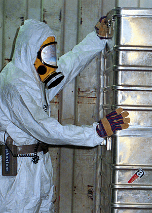

Die Entsorgung von Abfällen hängt von der Art des Abfalls ab. Die Entsorgung sollte von einer Entsorgungsfirma übernommen werden.
Unbelastete Abfälle, insbesondere Bauschutt, Bodenaushub und Straßenaufbruch, sind Wertstoffe. Sie sind einer Wiederverwertung zuzuführen.
Bei belasteten und verunreinigten Abfällen sind Sondermaßnahmen zu ergreifen und der Bauherr und die Behörde sind zu informieren.